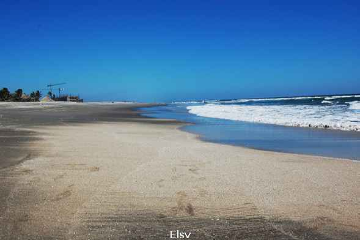

La Paz
La Paz es uno de los catorce departamentos que conforman la República de El Salvador. La cabecera departamental es la ciudad de Zacatecoluca. El departamento de La Paz se halla situado en el sector centro-sur de El Salvador. Sus límites son el lago de Ilopango y el departamento de Cuscatlán al Norte, el departamento de San Vicente al NorEste y Este, los departamentos de San Salvador y La Libertad al Oeste y el Océano Pacífico al Sur.

Municipios
Cabezera departamental
Zacatecoluca es una ciudad y municipio del departamento de La Paz, en El Salvador. Tiene una población de 75 100 habitantes para el año 2016. Sus orígenes se remontan a la época prehispánica, y durante la colonización española fue el segundo poblado de mayor importancia en el partido de San Vicente. En 1844 adquirió el título de ciudad con el reconocimiento de Noble, Generosa y Leal, Ciudad de Santa Lucía de Zacatecoluca. De este lugar es originario el prócer centroamericano José Simeón Cañas.
El municipio es gobernado por un Concejo Municipal, el cual es pluralista ya que existe representación de más de un partido político, quienes toman las decisiones sobre el territorio en lo económico, técnico y administrativo, conformado por el Alcalde, un Síndico, 10 Regidores Propietarios y 4 Regidores Suplentes. Tiene su sede en la Alcaldía Municipal de Zacatecoluca.
Su alcalde actual el Dr. Francisco Salvador Hirezi Morataya ocupando la silla edilicia por 3 períodos consecutivos desde el 1 de mayo de 2009 hasta el 1 de mayo de 2018.
Turismo
Uno de los lugares más reconocido de todo el país en lo que a turismo de playa se refiere se encuentra en el departamento de La Paz: la costa del sol, 1 a que aunque solamente cubre 20 manzanas, cuenta con una gran diversidad de aves costeras, invertebrados y también raíces de manglares; su arena es casi blanca y por ello es uno de los lugares preferidos por los turistas.
